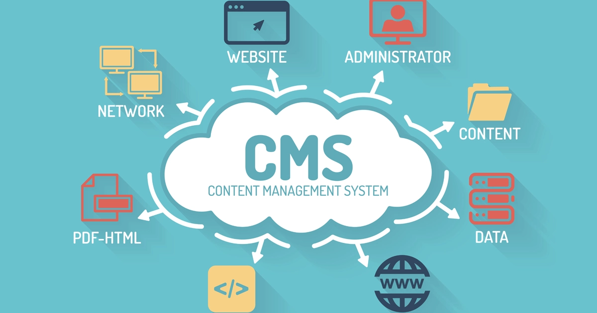
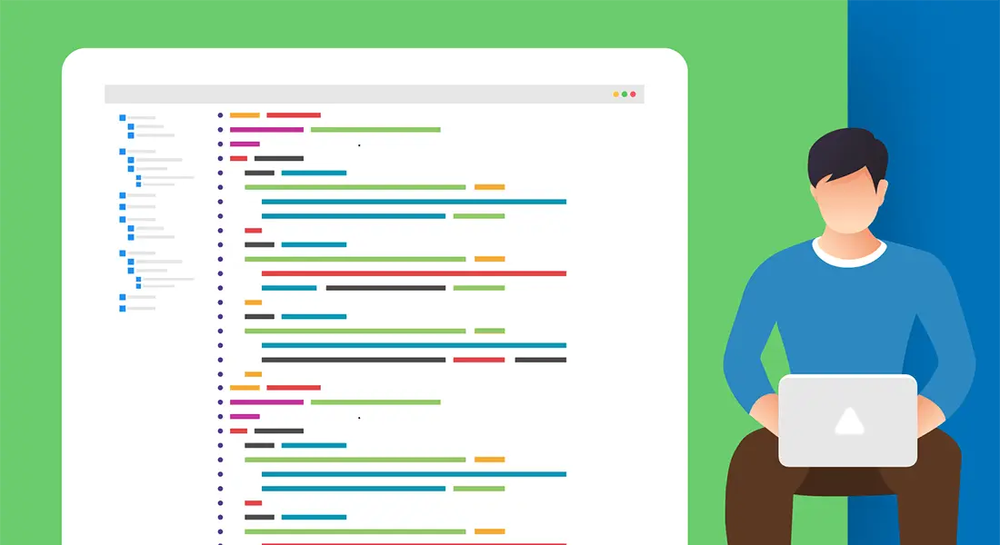
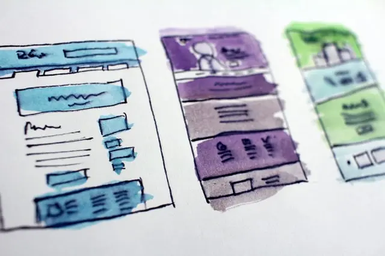
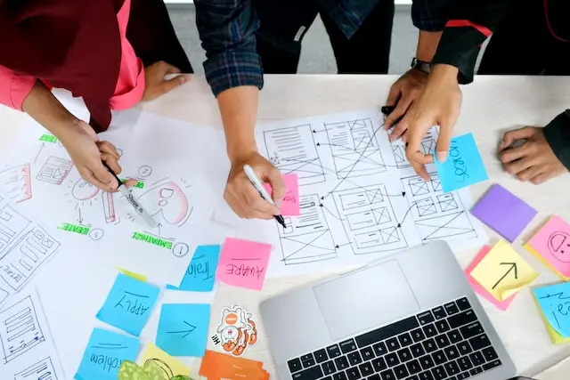
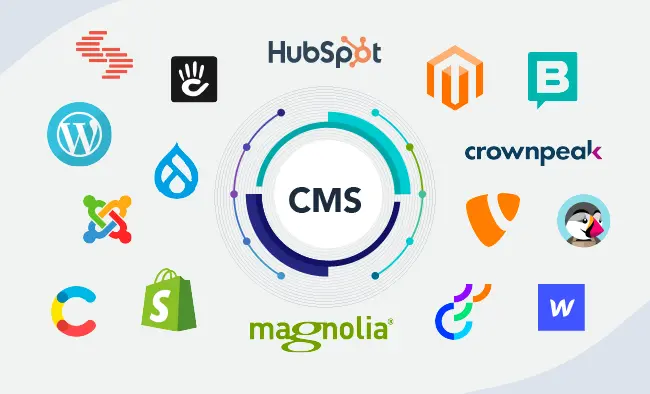
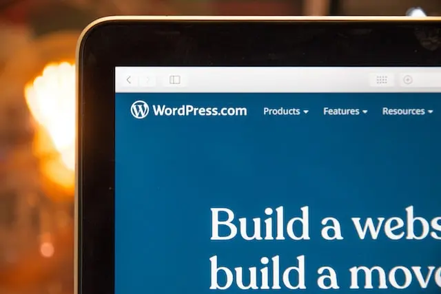

Hva er et CMS?
«Content Management System», også kjent som CMS, er et system som hjelper brukere med å lage, administrere og endre innhold på nettsiden deres. Kort fortalt, så er Content Management System et verktøy som hjelper deg med å bygge en nettside uten å skrive all koden fra «scratch».
I stedet for å bygge ditt eget system for å lage nettsider, lagre bilder og andre funksjoner, håndterer Content Management System alle de grunnleggende infrastruktur tingene for deg slik at du kan fokusere mer på andre deler av nettsiden din.
Med et CMS kan du opprette, administrere, endre og publisere innhold i et brukervennlig grensesnitt. Du kan tilpasse utformingen og funksjonaliteten til nettstedet ditt ved å laste ned eller kjøpe maler og utvidelser, i stedet for å kode. Du kan ha flere brukere som jobber i bakenden av det samme verktøyet – og mye mer.

Headless CMS
Et headless Content Management System har ikke presentasjonslaget. CMS administrerer innholdet, men ikke presentasjonen. Brukergrensesnittet kan deretter håndteres på hvilken som helst måte, for eksempel med JavaScript, eller til og med vises i en mobilapp. Dataene hentes fra CMS gjennom en API og kan returneres ved hjelp av et strukturert språk.
Et headless CMS er et innholdsstyringssystem som skiller hvor innholdet er lagret, «body», fra der det presenteres, «head». Du kan lagre innholdet i ditt headless CMS og deretter sende det til visning hvor som helst – noe som gir mye mer fleksibilitet med hensyn til hvordan det presenteres på forskjellige steder.
"Head" er relatert til hvor innholdet ditt havner, og "body" er der innholdet ditt lagres. Dette høres kanskje litt rart ut til å begynne med, men poenget med et headless CMS er ikke at du ikke vil ha eller trenger et head, det er at du kan velge og vrake hvilke head’er du sender innholdet ditt til.

Tradisjonelt CMS
Et tradisjonelt CMS er et monolitisk innholdsleveringssystem. Med et tradisjonelt CMS er frontend og backend koblet sammen.
Selv om headless CMS-er øker i popularitet som den beste løsningen for innholdslevering, er tradisjonelle CMS-er fortsatt de mest populære. I dag nå som denne artikkelen blir skrevet, har WordPress den største CMS-markedsandelen.
I et tradisjonelt system lagres ikke innhold i moduler, noe som gjør innholdsressurser vanskelig å formatere eller gjenbruke. Det er også vanskelig å legge til ny funksjonalitet eller funksjoner til et tradisjonelt CMS da det krever bruk av en plugin versus en integrasjon.

Headless CMS vs Tradisjonelt CMS
Begge CMS-ene har forskjellige fordeler, så derfor har jeg laget en sammenligning som fremhever forskjellen mellom begge CMS-ene og fordelene du oppnår.
Hovedfordelen med headless CMS er at de gir mer fleksibilitet i utformingen av nettsiden. Frontend utviklere kan hente data fra CMS og presentere det på hvilken som helst måte de vil, noe som åpner mange flere muligheter. I stedet for å følge de begrensede funksjonalitetene og standardmalene til et tradisjonelt CMS, kan selskaper med et dedikert frontend bruke et headless CMS til å designe store og unike nettsteder som kan skille seg ut fra konkurrentene.
Tradisjonelt CMS har også sine egne fordeler. Den største er at tradisjonell CMS-programvare er mye enklere å sette opp og bruke. Alt fra administrasjon til design og brukergrensesnitt er på ett sted, noe som gjør det enklere å utvikle og publisere innhold raskt. Det kan være enklere og billigere å bare bruke malene fra et tradisjonelt CMS enn å bruke et headless CMS og designe og bygge alt fra bunnen av. Og for enklere nettsteder, for eksempel personlige nettsteder og blogger, er malene som tilbys av et vanlig CMS sannsynligvis tilstrekkelig, så det er ingen reell fordel å bruke et headless CMS.

Så hvilken bør du velge?
Et tradisjonelt CMS kan være det bedre alternativet for mindre organisasjoner uten de nødvendige ressursene for å effektivt bruke et headless CMS. Det er også det bedre alternativet for enkle nettsteder som ikke har noen funksjoner som en standard CMS-mal kanskje ikke har. Men hvis du ikke vil bruke en mal for nettstedet ditt, eller hvis du vil ha ekstra funksjonalitet som tradisjonelle CMS-verktøy ikke kan tilby, kan et headless CMS være bedre.

Ulike CMS løsninger
Som du sikkert har skjønt allerede, finnes det mange ulike CMS `er på markedet. Derfor kan det være litt forvirrende på hvilken CMS som passer for din nettside. Under har jeg skrevet om 3 ulike CMS`er, og hva dem gjør.

WordPress
WordPress, opprinnelig lansert som blogging-programvare, har utviklet seg til den mest populære CMS-plattformen noensinne. Fordi grensesnittet og nettstedstemaene er ganske enkle å bruke, kan det være nyttig for mindre bedrifter som har mindre erfaring med design.
CMS Hub
Som det eneste kombinerte CMS og CRM, er CMS Hub av HubSpot designet for å hjelpe bedrifter enkelt å bygge og administrere et nettsted som er optimalisert for hver enhet og hver besøkende.
Det er viktig å vite at det er to versjoner tilgjengelig, men jeg vil fokusere på CMS Hub Professional.
Drupal
Drupal er et svært fleksibelt, åpen kildekode CMS rettet mot et bredt utvalg av utviklere og markedsførere. CMS lar markedsførere med mer grunnleggende erfaring lage et nettsted fra en mal, eller for utviklere å lage et nettsted som kan håndtere store datamengder og mye trafikk. Drupal optimerer de innebygde funksjonene for bedre ytelse og sikkerhet.